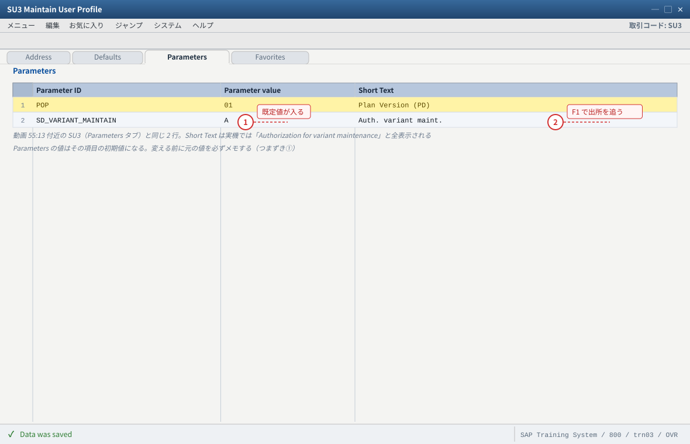
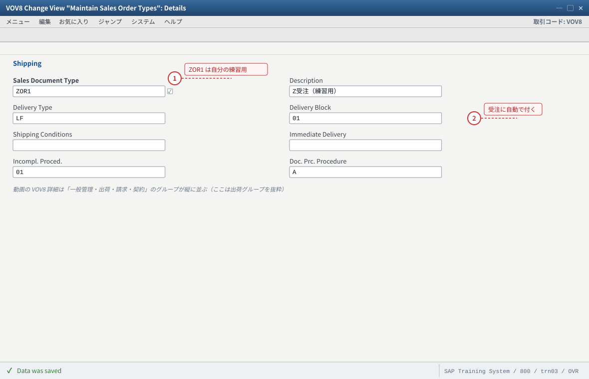
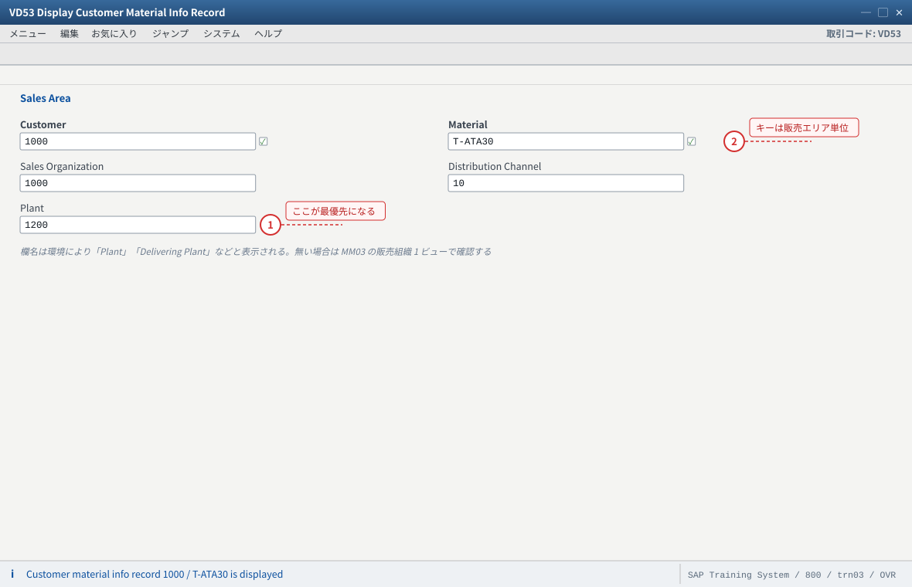
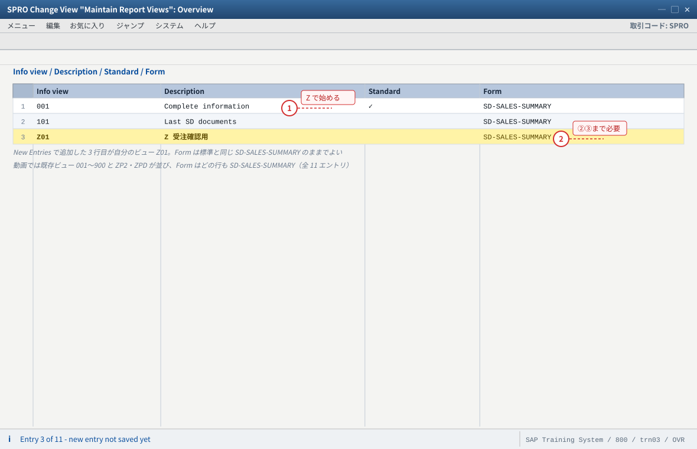
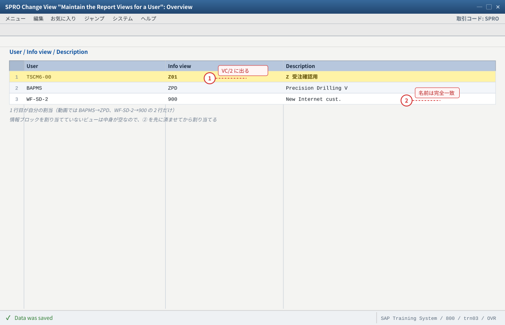
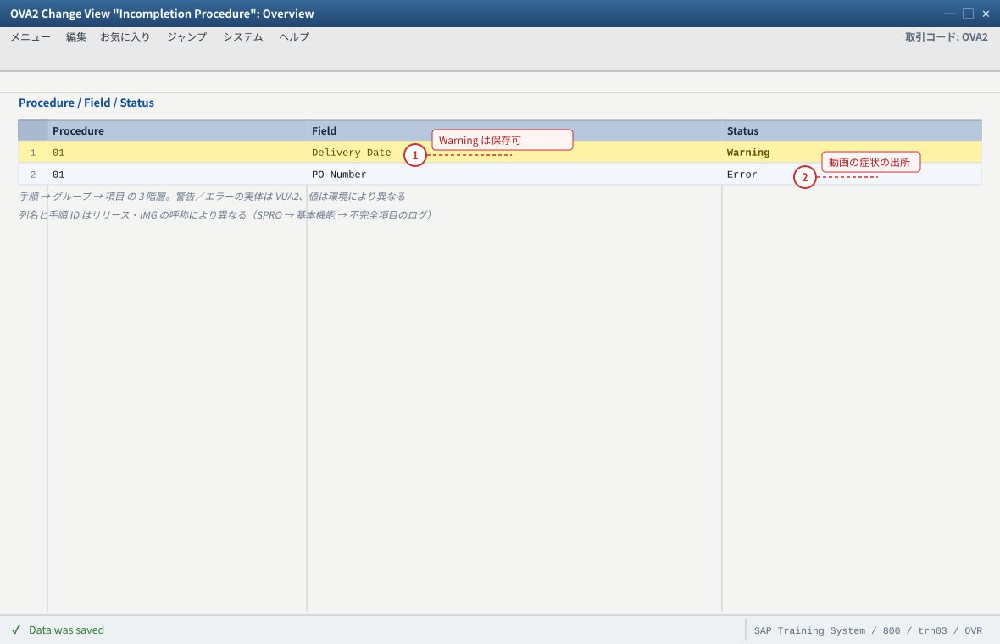
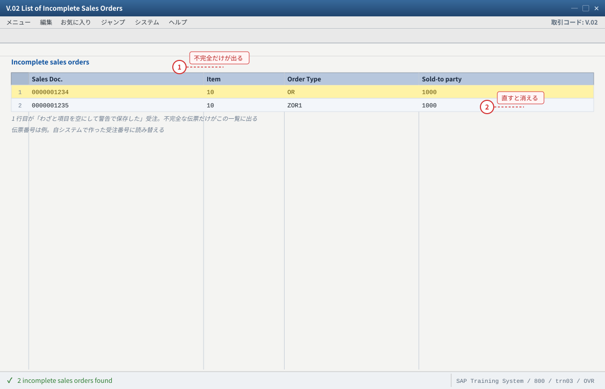
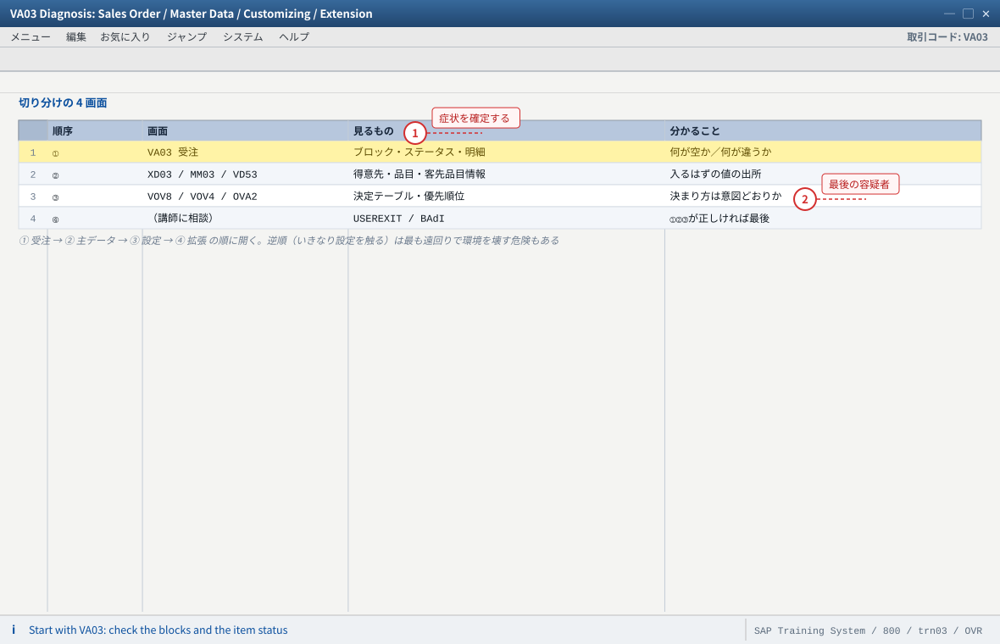

.png 放进 assets/gui/ 后执行 python3 tools/swap_gui_images.py <site> --apply 一键替换。练习⑤ ツール・発展・故障対応
SU3 ユーザプロファイル、お気に入り、一覧、SE16N、F1／F4 の使い方）→ ② 発展課題 4 本 → ③ 故障対照表で「症状から原因を引く」練習。55:13 付近の SU3）
5-2 発展①：伝票タイプにブロックを仕込む
5-3 発展②：出荷プラントの優先順位を実測する
5-4 発展③：Sales Summary のビューを自作して適用する
5-5 発展④：不完全性の必須項目を追加し V.02 で管理する
5-6 故障対応の 4 画面（CU50 相当の切り分け手順）
5-7 故障対照表（症状 → 根因 → 証拠 → 処置）
5-8 验收（完成基准）
5-1 ツールとヘルプ（動画 55:13 付近）
動画の終盤は SU3（ユーザプロファイル）の実演です。住所／Defaults／Parameters／Favorites のタブが示され、
続けて SAP Easy Access のお気に入りとヘルプの使い方が扱われます。「自分の道具を整える」ことが受注処理の効率に直結します。
| ツール | T-code／場所 | 何に使うか | 本站での使いどころ |
|---|---|---|---|
| ユーザプロファイル | SU3（動画で実演） | 住所・既定値（Defaults：日付書式・通貨など）・パラメータ（Parameters）・お気に入り | 受注の既定値（例：VBAK-VKORG 等のパラメータ）を仕込むと入力が減る。Default の通貨・日付書式は受注の見え方に効く |
| お気に入り | SAP Easy Access → Favorites（動画 55:28） | よく使う T-code を登録 | VA01／VA02／VA03／VC/2／V.02 を登録 |
| 受注一覧 | VA05 | 期間・得意先・伝票タイプで受注を一覧 | 文書一覧からの変更の入口（练习②） |
| 不完全な受注一覧 | V.02 | 不完全な受注を拾う | 不完全性チェックの運用（C14） |
| テーブル照会 | SE16N | テーブルを直接見る | VBAK／VBAP／KNVV／MVKE／KNMT（练习①） |
| 項目ヘルプ | F1 | 項目の意味とテーブル・項目名を調べる | 「この値はどこから来るのか」を調べる最速の方法 |
| 入力ヘルプ | F4 | 選択可能値を一覧 | 販売エリア・プラント・得意先の存在確認 |
| 与力分析 | VA03 → 条件 → 与力分析 | 条件がどう決定されたかを 1 行ずつ見る | Net value が想定外のときの切り分け（C12） |
| 伝票フロー | VA03 → 伝票フロー | 受注 → 出荷 → 請求の連鎖 | 练习④ |
SU3を起動し、動画と同じく Address／Defaults／Parameters のタブを確認する。- Defaults で日付書式と通貨を確認する（受注の日付・金額の見え方に影響）。
- Parameters に 1 行追加して効果を確かめる（例：
VBA系のパラメータ。値を変える前に元の値をメモ）。 - Favorites に
VA01／VA03／VC/2／V.02を登録する。 - 受注の任意の項目にカーソルを置き F1 を押して、テーブル名と項目名を読む（例：出荷プラント項目 →
VBAP-WERKS）。この習慣が故障切り分けの基本武器です。 VA03の条件画面で与力分析を開き、条件が 1 行ずつどう決まったかを読む。
SU3 の 4 タブの役割を説明できる。② お気に入りに主要 T-code を登録した。
③ F1 でテーブル名・項目名を調べられる（＝「値の出所」を自力で追える）。
④ 与力分析を読んで、条件の決定過程（アクセス順序）を指せる。
② F1 のヘルプが出ない → GUI のヘルプ設定（
SU3 ではなく GUI 側のオプション）。F1 が使えない環境では SE16N で代用。
- 1 Parameter ID と値の組が「入力の既定値」。受注の F4 や初期値がここで変わるので、変更は元の値を記録してから
- 2 入力欄にカーソルを置いて F1 を押すと、その欄のテーブル名・項目名（例：出荷プラント → VBAP-WERKS）が読める。値の出所を追う基本武器
自システムでの確認：SU3 の 4 タブ（Address／Defaults／Parameters／Favorites）を開き、Defaults で日付書式と通貨、Parameters で既定値、Favorites に VA01／VA03／VC/2／V.02 を登録する。F1 が出ない環境では SE16N で VBAK／VBAP を見て同じことを確認する。
5-2 発展①：伝票タイプにブロックを仕込んで挙動を比べる
VOV8で自分の伝票タイプ（ZOR1）を作る（C1）。ZOR1の出荷ブロックに値を 1 つ入れる（C1 の手順を参照）。VA01でZOR1を使い受注を作る → 最初から出荷ブロックが付いていることを確認する。- 逆に
OR（標準）で受注を作り、ブロックが付かないことを比較する。 ZOR1の設定を元に戻し、新規受注では設定が反映されない（既存受注は作ったときの設定を保持する）ことも確認する。
ZOR1 の受注に自動でブロックが付く。② 設定を戻しても既存受注のブロックは残る（＝設定は「その時に作った伝票」に焼き付く）。
③ 「ブロックが付いている理由は 3 通り」のうち Customizing 由来を実例で示せた。

- 1 標準 OR は変更せず、コピーして作った自分の伝票タイプ ZOR1 を触る（標準を壊すと以降の動作が変わる）
- 2 Delivery Block に値を入れると、この伝票タイプで作る受注は最初から出荷ブロック付きになる。設定を戻しても既存受注のブロックは残る（作ったときの設定が焼き付く）
自システムでの確認：ZOR1 で VA01 の受注を作ると Delivery block が自動で入り、OR では入らない。設定を戻したあと、新規受注には反映されず既存受注には残ることを比較する。不完全性手順などの ID は環境の値に読み替える。
5-3 発展②：出荷プラントの優先順位を実測する
- 品目マスタ（
MM02→ 販売組織 1）に出荷プラント A を入れる。 - 得意先マスタ（
XD02→ 販売エリアデータ → 出荷タブ）に出荷プラント B を入れる → 受注で B が採用されることを確認する。 - 客先品目情報（
VD51）に出荷プラント C を入れる → 受注で C が採用されることを確認する。 - 客先品目情報の出荷プラントを空に戻す → 受注で B に戻ることを確認する（＝優先順位が生きている証拠）。
- 各段階で
VBAP-WERKS（SE16N）を記録する。 - 元の値に戻すのを忘れないこと（練習環境を汚さない）。
② 動画スライドの「Proposing Plants Automatically」（
1400／1100／1000／1200）と同じ仕組みだと説明できる。VD51 で販売組織・チャネルを間違えると受注に効きません（客先品目情報は販売エリア単位）。② 優先順位どおりにならない → ABAP 拡張の可能性（SAP Note 2787562）。講師に相談。

- 1 客先品目情報の出荷プラントは 3 つの供給源のうち最優先。ここに値があると受注の VBAP-WERKS はこの値になる（空に戻すと得意先マスタの値に戻る）
- 2 キーは得意先＋品目＋販売エリア（販売組織・チャネル）。ここを間違えると受注のプラント決定に効かない（つまずき①）
自システムでの確認：優先順位は 客先品目情報（VD53）> 得意先マスタ（XD03 の出荷タブ）> 品目マスタ（MM03 の販売組織 1）。3 回受注を作り、各段階で SE16N の VBAP-WERKS を記録すると実測できる（動画スライドの 1400／1100／1000／1200 と同じ仕組み）。終わったら元の値に戻す。
5-4 発展③：Sales Summary のビューを自作して適用する
- ① Maintain Report Views で新しい情報ビュー（例 ID
Z01）を 1 つ作る（説明：Z 受注確認用）。 - ② Maintain Views for an Evaluation で、そのビューに情報ブロックを 3〜5 個割り当てる（例：Address／Sales Order Info／Last SD Documents）。
- ③ Maintain the Report Views for a User で、自分を
Z01に割り当てる。 VC/2を実行し、初期表示またはビュー選択にZ01が出ることを確認する。- 表示される情報ブロックが自分で選んだ 3〜5 個になっていることを確認する。
- 元に戻す（自分を既定ビューから外す）か、講師の指示に従って残す。
Z01 が VC/2 の「View」に出る。② そのビューに自分が割り当てた情報ブロックだけが表示される。
③ 「Sales Summary の画面は 4 つの Customizing で作られる」ことを、自分の手で示せた。

- 1 Info view は VC/2（Sales Summary）で選ぶビューの ID。Z で始めれば標準ビューを壊さない
- 2 ここで行を足しただけでは VC/2 に出ない。② 情報ブロックの割当（Maintain Views for an Evaluation）→ ③ ユーザへの割当 まで進めて初めて使える
自システムでの確認：SPRO → 販売と流通 → 販売サポート → リスト → 販売サマリ の 4 画面（Define Reporting Views／Assign Information Blocks To A View／Assign Default View To User／Set Document Display）。動画ではここで ZP2・ZPD が既に定義されている。

- 1 自分のユーザを Z01 に紐づける行。ここに入って初めて VC/2 のビュー選択に Z01 が出る
- 2 User はログオン名と完全一致（大文字小文字と - の位置まで）。動画は BAPMS／WF-SD-2 という命名
自システムでの確認：割当後に VC/2 を実行し、View 一覧に Z01 が出るか、表示される情報ブロックが自分で選んだ 3〜5 個（Address／Sales Order Info／Last SD Documents など）になっているかを見る。練習後は元に戻すか講師の指示に従う。
5-5 発展④：不完全性の必須項目を追加し V.02 で管理する
OVA2で使われている不完全性手順に、項目を 1 つ追加する（例：納入希望日、または出荷先）。VUA2で警告に設定する（エラーではなく警告にして、運用で拾う方式を体験する）。VA01でその項目を空のまま受注を保存する → 警告が出て保存できることを確認する。V.02を実行し、わざと作った不完全な受注が一覧に出ることを確認する。- 受注を直して（項目を埋めて）保存し、
V.02の一覧から消えることを確認する。 - 追加した設定を元に戻す。
V.02 に載る。② 直すと一覧から消える。
③ 不完全性チェックの 3 階層（手順／グループ／項目）と、適用先（伝票タイプ・明細カテゴリ・納入日程行カテゴリ）を説明できる。

- 1 今回追加した項目。VUA2 で Warning にすると保存はできて、V.02 の一覧に載せて運用で拾える（Error のままだと保存できない）
- 2 動画で保存時に出る「Enter PO number」エラーはこの行が原因。標準ではなく、その環境の不完全性手順の設定
自システムでの確認：OVA2 で OR に割り当てた手順を開き、PO 番号系の項目が入っているかを見て「動画の症状がどの設定から出るか」を説明する。適用先は伝票タイプ（VOV8）／明細カテゴリ（VUP2）／納入日程行カテゴリ（VUE2）の 3 か所。変更前に元の値をメモし、最後に元へ戻す。

- 1 保存時に警告で通した受注がここに載っている＝不完全なまま残っている証拠。放置すると出荷・請求に進めない
- 2 項目を埋めて保存し直すと、この行は一覧から消える。消えたことをもって直った確認にする
自システムでの確認：V.02 の選択条件・列・タイトルは環境により異なる。どの項目が欠けているかは SE16N の VBUV（明細）／VBUK（ヘッダ）で直接見る。受注を直して保存し直し、一覧から消えることまで確認する。
5-6 故障対応の 4 画面（切り分けの手順）
受注の異常は、次の 4 画面を順に開くとほぼ特定できます。動画の「データの出所」の考え方を、そのまま手順にしたものです。
値とステータス
XD02 / MM02 / VD51
VOV4 / VOV5 / VOV8
ABAP / USEREXIT
| 画面 | 見るもの | 分かること |
|---|---|---|
① VA03（受注） | ヘッダのブロック・ステータス／明細のカテゴリ・プラント・数量／納入日程行／条件画面 | 症状の正確な形（何が空か、何が想定と違うか） |
| ② 主データ | XD03（得意先：販売エリア・出荷先・支払条件）／MM03（品目：販売組織 1・2、MRP3、出荷プラント）／VD53（客先品目情報）／VK13（条件レコード） | 受注に入るはずの値の出所が正しいか |
| ③ 設定 | VOV8（伝票タイプ）／VOV4（明細カテゴリ決定）／VOV5／VOV6（納入日程行）／OVA2（不完全性）／OVZ2（在庫確認） | 決まり方（決定テーブル・優先順位）が意図どおりか |
| ④ 拡張 | 講師に相談（USEREXIT・BAdI・カスタムロジック） | ①②③がすべて正しいのに挙動が違う場合の最後の容疑者 |

- 1 まず受注そのものを見る。何が空か／何が想定と違うかを言葉にしてから次の画面へ進む（症状の形が決まらないと ②③ は見当違いになる）
- 2 ①②③がすべて正しいのに挙動が違うときだけ ④ を疑う。ABAP 拡張（USEREXIT・BAdI）は自分で直さず講師に相談する
自システムでの確認：異常が出たら VA03 で症状を記録 → XD03／MM03／VD53 で値の出所 → VOV8／VOV4／VOV5／OVA2 で決まり方 → 最後に拡張を疑う。症状・根因・証拠・処置を 3 件以上記録するのが验收の条件。
5-7 故障対照表（症状 → 根因 → 証拠 → 処置）
| # | 症状 | 根因（候補） | 証拠の取り方 | 処置 |
|---|---|---|---|---|
| 1 | 受注の Net value が 0 | 条件レコードが無い／有効期間外／与力日付ずれ | VA03 条件画面（与力分析）＋VK13 | 条件レコードを正しい期間・キーで登録（VK11） |
| 2 | 明細の出荷プラントが空 | 3 か所（客先品目情報・得意先マスタ・品目マスタ）すべてに値が無い | VD53／XD03／MM03 の 3 画面 | 優先順位を意識して、どこに入れるかを決めて保守（C10） |
| 3 | 出荷プラントが想定と違う | 上位の主データ（客先品目情報／得意先マスタ）に値がある | KNMT／KNVV／VBAP-WERKS を並べる | 上位の値を消すか、意図どおりに修正 |
| 4 | 明細カテゴリが TAN にならない | 品目カテゴリグループ／決定テーブルの行／品目使用目的 | MM03（販売組織2）＋VOV4 決定テーブル | 決定テーブルの 4 キーを確認して行を整備（C8） |
| 5 | 保存時に「PO Number を入力」エラー | 不完全性手順の必須項目（動画の環境で発生） | OVA2／V.02 | 値を入れる／警告に変える（C14） |
| 6 | 保存で赤いエラーが消えない | 不完全性（エラー設定）／項目ステータス（必須） | エラーメッセージを F1 で調べる＋OVA2／OVT0（項目ステータス） | 該当項目を埋める／設定を見直す |
| 7 | 受注は保存できたが出荷できない | 納入ブロック・請求ブロック・与信ブロック・納入日程行なし | VA03 ヘッダの 3 ブロック＋与信ステータス＋納入日程行 | ブロックの由来（手動／Customizing／チェック）を特定して解除 |
| 8 | 得意先を変えたのに価格が古いまま | 再決定されない項目／手動条件が残る／後続伝票ありで何も変わらない | VA03 条件画面（手動の表示）＋伝票フロー | 意図した再決定か確認。手動条件は入れ直す（练习②） |
| 9 | 変更したのに反映されない（後続伝票あり） | 動画スライドの仕様：先行／後続伝票があると変更されない | 伝票フローで後続伝票の有無 | 後続伝票を処理してから変更する（業務判断） |
| 10 | VC/2 に情報ビューが出ない | Report Views for a User に未割当／ビュー未定義 | VC/2 の View 一覧＋SPRO の 4 画面 | C5 の ①③ を整備 |
| 11 | Last SD documents が空 | C Order の統計更新が OFF／伝票が無い／統計未構築 | SPRO「Last Documents for a Customer」＋その得意先の伝票 | 統計更新を ON にする（C5 ④）。構築は講師に相談 |
| 12 | 在庫があるのにATP 不足になる | 在庫確認の 3 階層（伝票タイプ／納入日程行カテゴリ／品目マスタ）の設定違い | OVZ2／VOV6／MM03（MRP3）＋CO09 | 3 か所の値を突き合わせて整備（C13） |
5-8 验收（完成基准）
SU3の 4 タブ（Address／Defaults／Parameters／Favorites）を説明できる- お気に入りに主要 T-code を登録し、F1 でテーブル名・項目名を調べられた
- 与力分析（
VA03条件画面）を読んで、条件の決定過程を説明できる - 発展①：伝票タイプにブロックを仕込み、新規受注に自動で付くことを確認した
- 発展②：出荷プラントの3 段階の優先順位を実測で示した
- 発展③：Sales Summary のビューを自作し、自分のユーザに適用した
- 発展④：不完全性の項目を追加し、
V.02で管理する流れを体験した - 故障切り分けの 4 画面（受注 → 主データ → 設定 → 拡張）の順序を説明できる
- 故障対照表から2 件以上を実際に再現し、根因・証拠・処置を記録した
- つまずいた点を「症状 → 根因 → 証拠 → 処置 → 再発防止」で 3 件以上記録した
../sapmto/ 等）へ進む準備もできています。